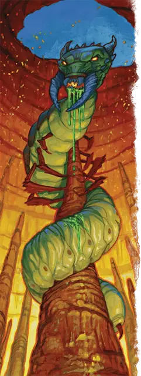

Аурнозчи
Aurnozci
Громадное Исчадие (Демон), хаотично-злое, именной НИП

Класс Доспеха 16 (природный доспех)
Хиты 370 (20к20 + 160)
Скорость 50 футов, копая 30 футов
| мод | спас | ||
|---|---|---|---|
| СИЛ | 27 | +8 | +15 |
| ЛОВ | 20 | +5 | +5 |
| ТЕЛ | 26 | +8 | +15 |
| мод | спас | ||
|---|---|---|---|
| ИНТ | 6 | −2 | −2 |
| МДР | 21 | +5 | +5 |
| ХАР | 19 | +4 | +4 |
Сопротивление урону холод, электричество
Иммунитет к урону кислота, огонь, яд; дробящий, колющий, рубящий от немагических атак
Иммунитет к состояниям испуг, истощение, отравление, очарование
Чувства истинное зрение 120 футов, пассивное Восприятие 15
Языки Бездны, Телепатия 120 фт.
Опасность 22 (41000 опыта)
Бонус мастерства +7
Особенности
Легендарное сопротивление (3/день). Если Аурнозчи проваливает спасбросок, он может вместо этого сделать спасбросок успешным.
Сопротивление магии. Аурнозчи совершает с преимуществом спасброски от заклинаний и прочих магических эффектов.
Тепловая регенерация. Если температура вокруг Аурнозчи составляет 100 градусов по Фаренгейту или выше, он восстанавливает 15 хитов в начале своего хода. Если Аурнозчи получает урон холодом или излучением, эта особенность не работает в начале его следующего хода. Аурнозчи умирает только в том случае, если он начинает свой ход с 0 хитов и не может регенерировать.
Действия
Мультиатака. Аурнозчи совершает одну атаку Укусом и две атаки Хвостом.
Укус. . Рукопашная атака оружием: +15 к попаданию, досягаемость 10 футов, одна цель. Попадание: 21 (2к12 + 8) рубящего урона плюс 9 (2к8) урона огнём.
Хвост. . Рукопашная атака оружием: +15 к попаданию, досягаемость 10 футов, одна цель. Попадание: 17 (2к8 + 8) дробящего урона.
Брызги слизи (перезарядка 5-6). Аурнозчи разбрызгивает слизь в 60-футовом конусе. Каждое существо в этом конусе должно совершить спасбросок Ловкости Сл 20, получая 42 (12к6) урона кислотой при провале или половину этого урона при успехе.
Использование заклинаний. Аурнозчи накладывает одно из следующих заклинаний, не нуждаясь в материальных компонентах, используя Мудрость в качестве базовой характеристики (Сл спасброска заклинания 20):
• Неограниченно: обнаружение магии [detect magic], раскалённый металл [heat metal] (вариант 7-го уровня)
• 2/день каждое: тьма [darkness], рассеивание магии [dispel magic], удержание личности [hold person]
Легендарные действия
Аурнозчи может совершать 3 легендарных действия, выбирая из указанных ниже вариантов. Лишь одно легендарное действие может быть совершено за раз, и только в конце хода другого существа. Аурнозчи восстанавливает истраченные действия в начале своего хода.
Перемещение. Аурнозчи перемещается на свою скорость.
Хвост. Орнозчи совершает одну атаку Хвостом.
Накладывание заклинания (стоит 2 действия). Аурнозчи использует Использование заклинаний.
Возгорание (стоит 2 действия). Пламя на мгновение окружает Аурнозчи. Каждое существо в пределах 15 футов от Аурнозчи должно совершить спасбросок Ловкости Сл 20, получая 18 (4к8) урона огнём при провале или половину этого урона при успехе.
Логово
Логово Аурнозчи - это слой Бездны под названием Ксулрегг. ПО Аурнозчи увеличивается до 23 (50 000 опыта) если столкновение происходит в его логове.
Действия логова
При значении инициативы «20» (проигрыш при ничье), Аурнозчи может совершить действие в логове, чтобы создать один из следующих эффектов; он не может использовать один и тот же эффект два раунда подряд:
Кокон. Аурнозчи нацеливается на одно существо Среднего размера или меньше, которое он может видеть в пределах 60 футов, и заключает это существо в сжимающийся кокон. Цель должна преуспеть в спасброске Силы Сл 23, иначе станет опутанным на 1 минуту. Цель, начинающая свой ход, будучи опутанным таким образом, получает 9 (2к8) дробящего урона. Существо может использовать своё действие, чтобы попытаться разорвать кокон, оканчивая на себе действие кокона при успешной проверке Силы (Атлетика) Сл 23.
Рой насекомых. Аурнозчи создает сферу из жалящих ос радиусом 30 футов с центром в точке на расстоянии 300 футов. Сфера огибает углы. Сфера существует 10 минут или до тех пор, пока Аурнозчи снова не использует это действие логова. Область сферы сильно заслоненная и является труднопроходимой местностью. Когда сфера появляется, каждое существо оказавшееся в ней должно совершить спасбросок Телосложения Сл 20, получая 16 (3к10) колющего урона и 16 (3к10) урона ядом при провале или половину этого урона в случае успеха. Существо также должно совершать данный спасбросок, когда оно впервые в свой ход входит в область сферы или начинает в ней свой ход.
Местные эффекты
Ксулрегг - удручающе удушливый план, известный следующими местными эффектами:
• Кипящая вода. Водоемы на Ксулрегге постоянно кипят, и даже жидкости в бутылках испаряются при контакте с атмосферой этого слоя. Погружение в воду не даёт сопротивления урону огнём, и существо, начинающее свой ход в воде, получает 7 (2к6) урона огнём. Существо, выпившее жидкость (например, зелье), получает 3 (1к6) урона огнём.
• Быстрое преображение. На Ксулрегге яйца, личинки и куколки развиваются и претерпевают метаморфозы в десять раз быстрее, чем обычно, независимо от питания или любых других условий выращивания.
Если Аурнозчи умирает, эти эффекты исчезают в течение 1к10 дней
Описание
Повелитель демонов Аурнозчи - червеподобный кошмар с огненной плотью и ядовитыми выделениями. В своем нынешнем виде Аурнозчи не может покинуть Ксулрегг, слой Бездны, который является одновременно его вотчиной и тюрьмой. Он прячется в причудливом улье, свисающем с дерева размером с гору из смолы и пламени под названием Кроводрево.
Аурнозчи полагается на демонических доверенных лиц и смертных поклонников, чтобы исполнять свою волю за пределами Бездны. Точная природа проклятия, связывающего Аурнозчи с Ксулреггом, является самой тщательно охраняемой тайной его культа, полностью известной лишь загадочному лидеру веры, архимагу [archmage] в маске по имени Око Аурнозчи.
Последователи Аурнозчи верят, что заточение повелителя демонов подходит к концу, и вскоре Заточенный Червь сбросит свою нынешнюю форму и превратится в еще более могущественную фигуру. Как только он обретет эту новую форму, Аурнозчи сможет сбежать из Ксулрегга и посеять хаос по всей мультивселенной. Чтобы ускорить эту ужасную трансформацию, культисты выслеживают души смертных для насильственного ритуального жертвоприношения своему богу.
Отыгрыш Аурнозчи
Аурнозчи - существо, способное к бессмысленному разрушению, и у Заточенного Червя мало дел со смертными, которые не заканчивались бы потреблением. Периодически Око Аурнозчи общается со своим ужасающим хозяином или проводит церемонию умилостивления в Огненном Улье. В бою Аурнозчи ужасно верещит и атакует любых незваных гостей оказавшихся в поле зрения с безрассудной решимостью.